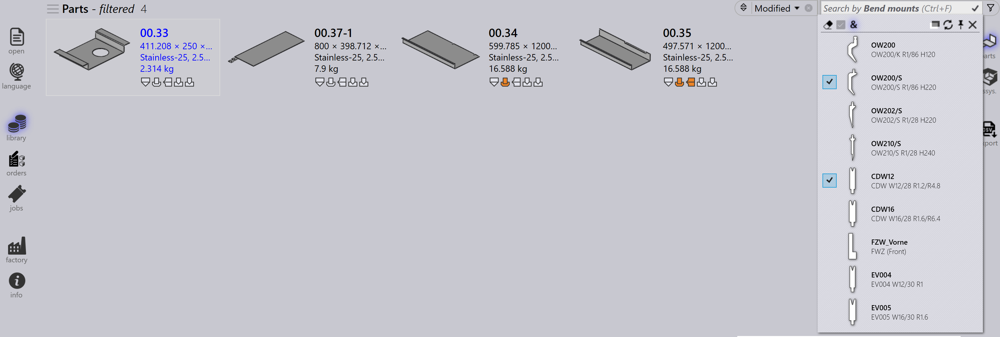

Filtry części
Filtry Biblioteki Części umożliwiają szybkie wyszukiwanie i lokalizowanie części w bibliotece poprzez zastosowanie określonych warunków. Przez zawężenie wyników do tylko tych części, które spełniają kryteria, te filtry ułatwiają efektywne zarządzanie i dostęp do odpowiednich części.

Status
-
Użyj filtru Status, aby wyszukać części na podstawie statusu narzędzi.
-
Menu rozwijane wyświetla stany narzędzi jako kolorowe pola oraz wszystkie dostępne maszyny i ich odpowiednie błędy.
-
Kolorowe pola reprezentują następujące stany:
-
Białe: Narzędzia OK
-
Pomarańczowe: Narzędzia mają błąd
-
Żółte: Narzędzia mają ostrzeżenie
-
Szare: Narzędzia pominięte
-
-
Jeśli część ma wąski kołnierz lub błędy nieprzypisanych narzędzi, wybranie tych opcji wyświetli odpowiednie części.

-
Części z pominiętymi narzędziami na wybranej maszynie zostaną wyświetlone po kliknięciu szarego kolorowego pola.

Mocowania gięcia
-
Użyj filtru Mocowania gięcia, aby wyszukać części na podstawie użytego narzędzia do gięcia.
-
Menu rozwijane pokazuje wszystkie dostępne narzędzia do gięcia i może być filtrowane według nazwy narzędzia, typu (stempel, gęsia szyja, promień itp.) lub opisu.
-
Wybierz wiele narzędzi i kliknij Dopasuj wszystkie|&**, aby posortować narzędzia, które używają obu wybranych narzędzi.

Użyte narzędzia
-
Filtrowanie według Użyte narzędzia działa podobnie do filtrowania według Mocowania gięcia.
-
Ikony narzędzi są wyświetlane w proporcjonalnych rozmiarach (nie dokładnych, ale względnych).
-
Gdy podgląd narzędzi jest otwarty, najechanie kursorem myszy na narzędzie na liście filtrów podświetla to narzędzie w okienku podglądu.
-
Można wybrać wiele narzędzi i zastosować je za pomocą Dopasuj wszystkie|&**.

Stan
-
Użyj filtru Stan, aby wyszukać części na podstawie ich aktualnego stanu.
-
Menu rozwijane wyświetla wszystkie odpowiednie stany w zależności od dostępnych części w bibliotece.
-
Lista stanów zmienia się dynamicznie zgodnie z wybranymi częściami i ich statusem.
-
Na przykład wybierz Material Missing, aby wyświetlić części w nierozwiązanym stanie materiału.